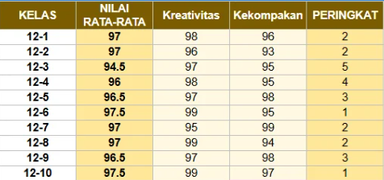

kelompok XI-4 presents
Statistika
FESBUD
Halaman ini merangkum penilaian Penampilan Kelas 12 pada FESBUD: sepuluh kelas (12-1 sampai 12-10) dinilai, lalu nilainya kami olah dengan statistika deskriptif. Mulai dari tabel di bawah, lalu coba tebak histogramnya di Arena Game.
Lihat grafikMain gameApa saja isi datanya?
Setiap kelas punya tiga nilai dan satu peringkat. Semua nilai berada di rentang 93 sampai 99, jadi selisih antarkelas tipis dan seru dibandingkan.
Nilai rata-rata
Nilai akumulasi tiap kelas dari seluruh kriteria penilaian. Rentang 94,5 sampai 97,5.
Kreativitas
Seberapa kreatif penampilan kelas. Rentang 95 sampai 99, dengan 12-6, 12-8, dan 12-10 sebagai nilai tertinggi.
Kekompakan
Seberapa kompak tim di panggung. Rentang 93 sampai 99, dengan 12-7 sebagai nilai tertinggi.
Peringkat
Urutan berdasarkan nilai rata-rata. Kelas dengan nilai sama berbagi peringkat yang sama.
Hasil Penilaian Ujian Praktek

Ukuran statistik yang dihitung
Mean
Rata-rata data berkelompok: jumlah (frekuensi × titik tengah) dibagi banyak data.
Modus
Nilai yang paling sering muncul di kelas interval dengan frekuensi tertinggi.
Kuartil
Membagi data jadi 4 bagian sama: Q1, Q2, Q3.
Desil
Membagi data jadi 10 bagian: D1, D5, D9.
Persentil
Membagi data jadi 100 bagian: P1 sampai P90.
Tabel hasil
Klik judul kolom untuk mengurutkan, klik baris untuk melihat profil kelas.
| Kelas | Nilai rata-rata | Kreativitas | Kekompakan | Peringkat |
|---|
Tim penyusun
Nilai tiap kelas
Pilih nilai yang ingin dibandingkan. Sumbu dimulai dari 90 supaya selisih kecil terlihat.
Porsi nilai rata-rata
Arahkan kursor atau tekan sebuah irisan. Porsinya hampir rata, karena nilainya berdekatan.
Histogram
Jelajah statistik
Tabel frekuensi
Posisi data
Pilih ukuran, lalu lihat letaknya di garis nilai.
Kesimpulan data
Dihitung otomatis dari data nilai kelas.
Perbandingan
Kesimpulan kelompok
- Nilai rata-rata sepuluh kelas berada di rentang 94,5 sampai 97,5 dengan mean 96,65, median 97,12, dan modus 97,28. Karena median dan modus lebih tinggi dari mean, sebagian besar kelas bernilai tinggi dan hanya sedikit yang rendah (12-3 dengan 94,5). Kelas 12-6 dan 12-10 menempati peringkat 1.
- Kreativitas menjadi nilai dengan rata-rata tertinggi (97,5 pada data tunggal, 97,7 pada data berkelompok), dengan median 98 dan modus 98,29. Nilai tertinggi 99 diraih 12-6, 12-8, dan 12-10. Rentangnya 4, jadi kreativitas antarkelas cukup merata.
- Kekompakan memiliki rata-rata terendah (96 pada data tunggal, 96,15 pada data berkelompok), dengan median 96 dan modus 95,25. Nilainya paling beragam (rentang 6, dari 93 sampai 99). Kelas 12-7 paling kompak dengan nilai 99, sedangkan 12-2 terendah dengan 93.
- Letak data: pada nilai rata-rata, 75% kelas bernilai di bawah 97,53 (Q3). Pada kreativitas Q3 = 98,5 dan pada kekompakan Q3 = 97,75. Artinya seperempat kelas teratas jelas unggul, dan selisih antarkelas pada penampilan kelas 12 tipis.
- Kesimpulan akhir: penampilan kelas 12 di FESBUD sudah sangat baik karena semua nilai di atas 93. Kreativitas paling kuat, sedangkan kekompakan masih bisa ditingkatkan karena paling beragam antarkelas.
Coba hitung sendiri
Masukkan angka dari tabel frekuensi untuk menghitung kuartil, desil, atau persentil. Isi awal adalah contoh Q3 nilai rata-rata (hasilnya 97,53).
Arena Game
Kumpulkan koin dengan menebak data. Koin tersimpan di peramban ini.
Tebak Histogram
Histogram ini milik nilai yang mana?
Mana yang lebih tinggi?
Streak: 0